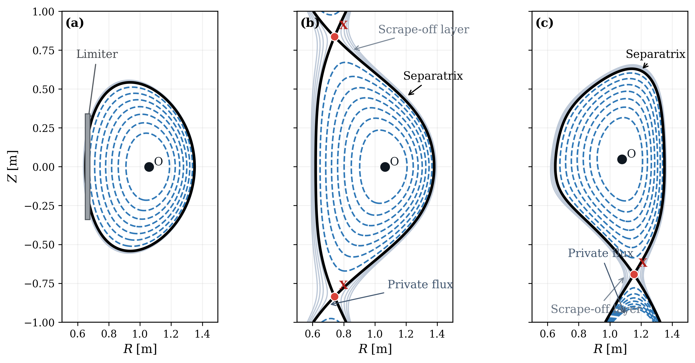
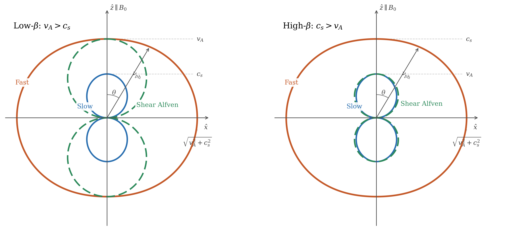
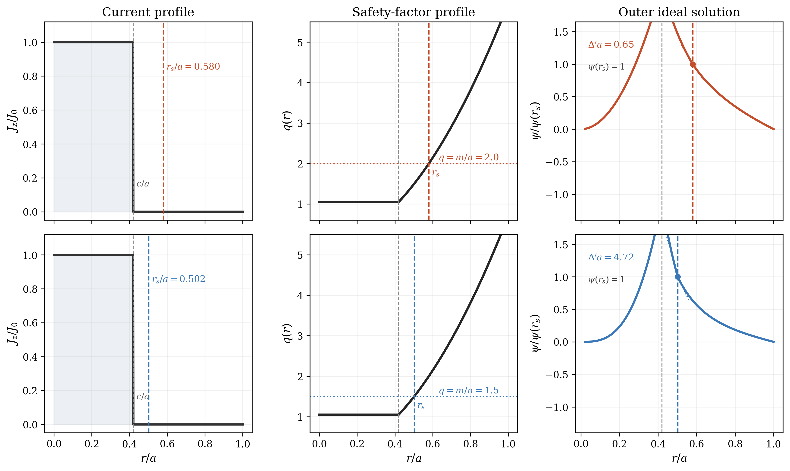

These notes grew out of graduate lectures on magnetohydrodynamics given without pretending that fusion, space physics, and astrophysics are separate intellectual worlds. One of the pleasures of MHD is that the same equations reappear in liquid-metal experiments, in tokamaks and reversed-field pinches, in the solar wind, in planetary interiors, and in accretion flows.
This web edition keeps that spirit, but adds interactive explorers, movies, and stitched navigation so the classic problems can be approached from several directions at once: derivation, geometry, experiment, and physical intuition.
A theoretical result does not become fully intelligible until it has been reconstructed at least once. These notes are therefore organized around problems rather than formalism alone, and the algebra is carried far enough that the approximations, balances, and experimental consequences stay visible.
They are modular by design. You can read them linearly, but they also work as a problem-driven reference. Readers interested in equilibrium and stability can move quickly into tokamak geometry and kink/ballooning theory; readers drawn to astrophysical applications may prefer dynamos, shocks, solar wind, and reconnection.
The current web edition covers Lectures 0 through 44, from the opening foundations through equilibrium, waves, kinetic MHD, interchange, kinks, TAEs, ballooning modes, tearing, helicity, reconnection, shocks, and the late-book appendices.
If you want a printable version, use the PDF edition linked above. For a long-lived archive record, use the Zenodo project DOI 10.5281/zenodo.20140830.
Preferred citation: Cary Forest, Classic Problems in Magnetohydrodynamics: Interactive Web Edition (University of Wisconsin--Madison, 2026), magnetohydrodynamics.physics.wisc.edu, project DOI 10.5281/zenodo.20140830.
Zenodo DOI: 10.5281/zenodo.20140830
Source / release record: github.com/cbforestWI/Classic-Problems-in-MHD

Equilibrium and shapingAnalytic Grad-Shafranov structure, shaping, reconstruction, and the geometry of confined plasmas.
Waves and continuaFrom basic Alfvén-wave geometry to toroidal continua, gaps, and energetic-particle-driven mode structure.
Relaxation and reconnectionTearing, helicity, self-organization, and the ways magnetic topology changes when ideal constraints fail.Begin with impedance matching, one-fluid MHD, Braginskii closure, and CGL if you want the assumptions and limits made explicit from the start.
Jump to the Grad-Shafranov sequence for force balance, tokamak shaping, reconstruction, and the equilibrium logic behind later stability theory.
Follow the ladder from interchange and kinks through internal kink, TAE, ballooning, and resistive instabilities, with explorers attached to many of the central cases.
Liquid-metal flows, solar wind, disc winds, dynamos, shocks, and reconnection show how the same equations reorganize themselves in very different physical settings.